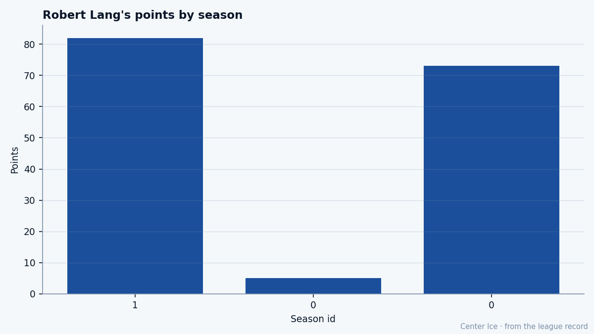

WSH
WSHThe 133rd Pick, at 34: Robert Lang is 23 grades past his ceiling
He didn't hold an NHL roster spot until he was 26. Now he's scoring at 112 pace on a $5.00M deal with 3 years left, and the Bureau says this shouldn't be happening.
 Tomáš VránaProfile writer · The Sweater
Tomáš VránaProfile writer · The Sweater Robert Lang81 turns 35 in December. He has 82 points in 60 games for Washington, a pace of 112 over a full 82, which would clear the career high of 80 he set in 2000-01 with Pittsburgh by 32 points. The League Scouting Bureau has his base grade at 84 and his potential at 61. That puts him 23 grades above the ceiling it set for him, and he has spent the entire season there.
Robert Lang81 turns 35 in December. He has 82 points in 60 games for Washington, a pace of 112 over a full 82, which would clear the career high of 80 he set in 2000-01 with Pittsburgh by 32 points. The League Scouting Bureau has his base grade at 84 and his potential at 61. That puts him 23 grades above the ceiling it set for him, and he has spent the entire season there.
He was the 133rd player selected in 1990, 5th round, by Los Angeles. A center from Teplice, Czechoslovakia, who had scored 15 points in 32 games for HC Litvínov the previous year. The Kings drafted him and then waited. He stayed in the Czech Extraliga for two more seasons, arriving in Los Angeles for the 1992-93 season at 22. He managed 22 points in 68 games in 1995-96, then went back to Europe to play for Sparta Praha. He did not hold a full NHL job until Pittsburgh signed him as a free agent on September 2, 1997, when he was 26.
That road, out and back and out again, makes 82 points at 34 strange. A man who could not keep a roster spot at 25 is putting up 82 points at 34, on a club that sits 2nd in the Atlantic with 83 points in 67 games.
What the Book sees and what it does not
The Development Index has him at minus 2 this edition. His overall reads 81, which is the base of 84 minus that 2. The Index has been down on him all season; he is one of the fallers on the Bureau's published list, carrying 82 points in 60 games while marked as sliding. A player scoring at this pace gets flagged as falling because the base is falling, not the production. The ceiling at 61 sits so far below the floor at 84 that the Index can be negative and the line can still climb.
His best attributes are the ones you need to be a 34-year-old center on a playoff club: HERO 89, ENDU 87, PASS 86, SHPW 86, ACCU 85, PUCK 85. He is not a physical player in any way the Book can see. FIGHTING 50, TOUGHNESS 50, INJURY RESISTANCE 51. Those are the three lowest grades on his card and they sit next to each other at the bottom of the sheet. A man with a 50 in fighting who has played 60 of Washington's 67 games through the trade deadline window is either lucky or careful.
Lang has no injuries on record this season. But INJU 51 means the Bureau's model expects him to miss time. He has gone 60 games without a day on the shelf while the grades say the body can absorb less than most. His teammate  Sergei Gonchar84 went down with a back between March 2 and March 4, out until March 19. Washington is thin at the back with its leading defenseman gone, and the center with the 51 in injury resistance is the man carrying 55 assists.
Sergei Gonchar84 went down with a back between March 2 and March 4, out until March 19. Washington is thin at the back with its leading defenseman gone, and the center with the 51 in injury resistance is the man carrying 55 assists.

The room
Washington built around two big names and a Czech who arrived after his career was supposed to be over.  Olaf Kolzig93 in the crease at overall 93.
Olaf Kolzig93 in the crease at overall 93.  Jaromir Jagr90 at 90, scoring 120 points in 67 games.
Jaromir Jagr90 at 90, scoring 120 points in 67 games.  Peter Bondra87 at 87. Lang slots in as the top center on a club that has scored 238 goals in 67 games and allowed 207. He leads Washington's centers in scoring. Jagr and Bondra are the wingers; Lang is the one distributing, and 55 assists on 82 points tells you where the value sits.
Peter Bondra87 at 87. Lang slots in as the top center on a club that has scored 238 goals in 67 games and allowed 207. He leads Washington's centers in scoring. Jagr and Bondra are the wingers; Lang is the one distributing, and 55 assists on 82 points tells you where the value sits.
Morale 96. A man who came from Teplice at 19, who was sent back to the Extraliga at least twice, who spent the 1994-95 lockout scoring 23 points in 16 games for Litvínov before the NHL resumed, is playing with confidence on a team that makes the playoffs.
He has $5.00M left for 3 seasons. That is $15.00M through age 37, at $61K per point this season. For comparison, Jagr is 33 and past his ceiling too. Both are scoring like they have not heard.
What happens in 15 days
The calendar has the trade deadline on March 19. Washington sits at 83 points, 2nd in the Atlantic, behind New Jersey at 89. The Capitals are a playoff team by any reasonable measure. Lang is their top center, 34, on a contract that runs 3 more years and $15.00M. A club sitting in a playoff spot 15 days from the deadline is not shopping its top center, and Washington is not.
But the Bureau's ceiling is 61. That number does not move, does not care that a man scored 73 last season or 82 on pace this season. It was set when he was a teenager in Teplice, and the model keeps printing the same line every edition. The question in April, if Washington makes it and the series goes seven, is whether a man who has been 23 grades above his ceiling for a season can keep it up through the part where the legs go and the body with the 51 starts to talk.
21.1 minutes a night. 27 goals and 55 assists, the assists coming from PASS 86, ACCU 85, PUCK 85, the goals from SHPW 86. Not speed, which sits at 84 and is good but not elite. Not size, because at 50 toughness he gives nothing on the board. Passes, finishes, the stamina to do it 82 times, which ENDU 87 says he has until it does not.
The 133rd pick from 1990 is 23 grades past his ceiling at 34 and nobody in Washington seems interested in pointing that out to him.